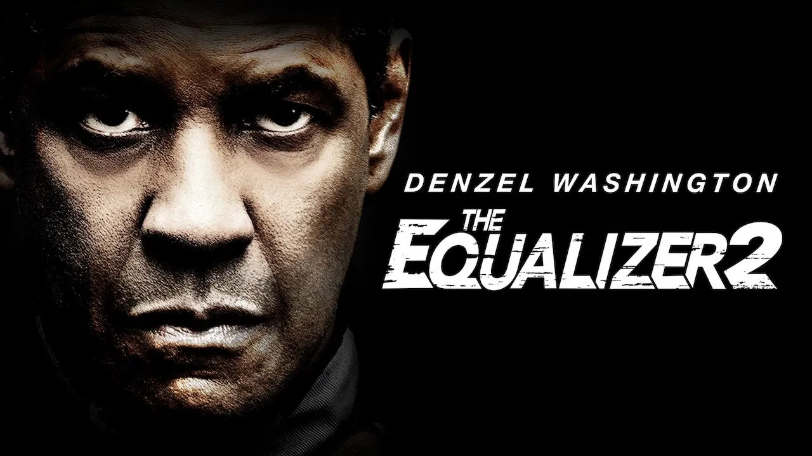
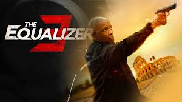

Curiosidades
- Basada en la serie clásica de los años 80 protagonizada por Edward Woodward.
- Denzel entrenó intensamente para el papel.
- Se convirtió en un ícono de justicia urbana.
- Tuvo una gran recepción del público.
- Denzel realizó muchas escenas sin dobles.
- Originó dos secuelas más.


Premios y nominaciones
- Premio para Antoine Fuqua a mejor dirección.
- Denzel Washington fue nominado a mejor actor en los premios Image.
- Chloë Grace Moretz, nominada a mejor intérprete joven.
- La película fue nominada al premio del Público (mejor película) en el festival de Toronto.